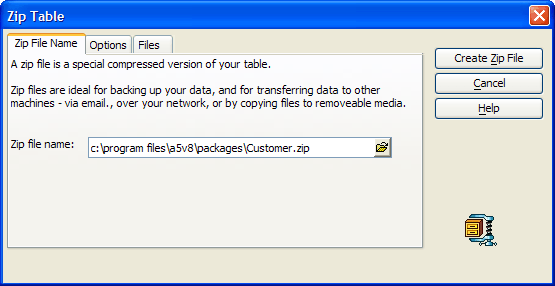

Zip Table
To collect one or more components of a table into a zip file:
Display the Table/Sets tab of the Control Panel.
Select the table of interest, right click, and select Zip... to display the Zip Table dialog.

On the Zip File Name tab click to navigate to the folder that will contain the zip file. Enter the name of the zip file and click Open.
Display the Options tab.
Optionally, clear Include Data Dictionary if you do not want to include Field Rules, Layouts, and Operations defined for the table.
Optionally, clear Include Indexes, if you do not want to include indexes. Indexes can make a zip file signficantly larger. The indexes can be recreated without loss of information later.
Optionally, clear Compress table before zipping. Compression removes deleted records from the database, resulting in a smaller zip file.
Optionally, display the Files tab to see which table components will be included in the zip file.
Click Create Zip File to continue or click Cancel to quit without taking any action.
 Note : You cannot
zip part of a password protected database.
Note : You cannot
zip part of a password protected database.
See Also